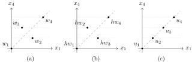

IThe theorem and the architecture of its proof 4
1The result 4
1.1Proof status 6
1.2Earlier work and the method 6
1.3Reading guide 8
1.4Notation and conventions 8
2Definitions 9
2.1The gauge group and the Wilson measure 9
2.2Wilson families and their correlations 10
2.3Local fields 12
2.4Euclidean properties 14
2.5Field spaces and phases 15
2.6Wightman theories 15
2.7The trace and product statements 16
3The main theorem 17
4Strategy of the proof 19
4.1Why the ultraviolet induction closes 19
4.2Tuning, uniqueness and convergence 23
4.3Rotations 24
4.4Phases and reconstruction 25
4.5The trace 25
5The renormalization group 26
5.1Scales and the block map 26
5.2The density and its norms 28
5.3The inductive step 31
5.4Multiscale trajectories 32
5.5Local fields under blocking 34
5.6Uniform bounds and the fixed-volume limit 35
6The continuum limit, stress, phases, trace and products 36
6.1The volume limit and the field calculus 36
6.2Stress and rotations 38
6.3Phases and reconstruction 41
6.4Trace and products 43
7Deduction of the main theorem 46
8A weaker existence statement 47
8.1Hierarchy data and the conditions Q0–Q6 48
8.2A generalized free-field example 49
8.3Conventions for hierarchy data 51
8.4An averaged countertest 52
9Constants and order of choice 52
Index of notation 54
IIProofs 57
10Local polynomial fields 57
10.1Labels, test holonomies and the Taylor map 58
10.2Taylor-normalized sections 59
10.3Small-field bounds 61
10.4Auxiliary equation sections 62
10.5Example: the curvature square 66
11Gauges and block integration 67
11.1The block kernel 68
11.2Free quadratic forms 72
11.3The stationary background and Gaussian coordinates 79
11.4Inverse, vertex and Ward estimates 85
11.5The local large-field energy 93
11.6Sector Gaussian integration 100
12Path actions and the one-loop coupling 112
12.1Curvature coordinates and the path action 112
12.2Fourth-order matching 114
12.3The determinant comparison 119
12.4The one-loop coefficient 122
13Activities and the inductive step 129
13.1The local expansion 132
13.2Local quadratic subtraction 150
13.3Forced fusion, activity bounds and the reset 152
13.4Continuity at fixed volume 158
13.5The Wilson start 159
13.6The specified recursion 161
13.7Weighted analytic estimates 163
14Trajectories, marked fields and ultraviolet convergence 177
14.1Trajectories and tuning 178
14.2Marked fields and volume-uniform estimates 185
14.2.1One marked insertion 185
14.2.2Chessboard seminorms and replicated sources 192
14.2.3Negligible errors and local matching 200
14.2.4Equation identities and coefficient corrections 204
14.2.5Comparison with free fields 207
14.2.6Bounds for lattice differences 217
14.2.7Bounded approximations 220
14.3Full ultraviolet convergence 224
15Infinite volume and field calculus 231
15.1Volume limits 231
15.2Separated cells and negligible errors 233
15.3Quotient fields 234
15.4Euclidean properties 237
15.5Repeated reflected words 238
16Free fields, Ward identities and rotations 239
16.1Free fields 240
16.2Lattice inputs 247
16.3Free comparison and the conserved line 254
16.4Coordinate reflection spaces and spectral estimates 257
16.5Ward identities and rotations 263
17Phases and reconstruction 270
17.1Compression and phases 270
17.2Reconstruction 276
18The trace law and non-free comparisons 284
18.1Trace and spectrum 284
18.2Precise non-free comparisons 301
19Products and contact subtractions 305
19.1Products and nested clusters 310
19.2Contact subtractions 323
References 332
We prove the phase decomposition of Theorem 6.13 and the reconstruction of Theorem 6.16, starting from the correlations of Theorem 6.1, the quotient fields of Proposition 6.4, the slab operators of Lemma 16.12, the rotations of Lemma 16.17 and the tensor of Theorem 6.10. Three different objects appear, and only the first two are used here.
| object | role |
| separated correlations \(S^{\xi}_n\) of a phase | Euclidean correlations, with reflection positivity on positive-time words (Section 17.1) |
| ordered-time continuations \(\textsf{F}^{\xi}_n\) and boundary distributions \(W^{\xi}_n\) | construction of the tempered Wightman functions and the relativistic fields (Section 17.2) |
| contact extensions of Theorem 6.21 | a specified Euclidean extension through collisions with controlled local order (Section 19); not used in the reconstruction |
The reconstruction thus proceeds from separated Euclidean correlations and slab bounds; it does not require a positive Euclidean extension across collision diagonals.
We keep the words, reflections \(\vartheta, \theta\), insertion rule and slab operators \(\textsf{B}_h (w)\) of Section 16.4.
Put \(P_0 = P_4^0\) and \(\Omega = \Omega_4^{\text{OS}}\) in this subsection, and write \(U_y\), \(y^4 = 0\), for spatial translations on the OS space. Compression does the following. A long empty time interval removes the positive-energy components: \(\textsf{B}_{h + t} (w) = \textsf{B}_h (w) e^{- tH_4^{\text{OS}}}\) and \(e^{- tH_4^{\text{OS}}} \to P_0\). The surviving insertions \(M^0 (w) = P_0 \textsf{B}_h (w) |_{\ker H_4^{\text{OS}}}\) commute (Lemma 17.1), and a character of the algebra they generate assigns a compatible scalar to every compressed insertion; integrating over characters against the vacuum state gives the mixture formula. A phase is such a character, not a set of field configurations. Commutativity alone does not show that each character is reflection invariant, or that no field direction is lost in it: a lattice variance inequality gives the first, and the chessboard inequality preserves the rank of finite families of field tests (Lemma 17.3). Figure 16 shows where each of these objects lives.
Figure 16. The spaces and maps of this
section. A positive word \(w\) in a slab gives the insertion
\(Y_w\) from the full ground space \(\ker H_4^{\text{OS}}\) of
the mixture, which need not be a line, into its OS space;
compression by the ground projection \(P_0\) gives \(M^0 (w)\),
and these operators generate the commutative algebra
\(\mathfrak{A}_0\). A phase is a character \(\xi\) of
\(\mathfrak{A}_0\). The OS space of the phase is the completion
of positive words under the form \(\xi (Y_v^{\ast} Y_w)\), the
value of \(\xi\) on the compression of a whole word, which need
not be the product of the values on its two halves |
 |
Figure 17. The axis exchange in the proof of Lemma 17.1, in the plane of the first and fourth coordinates, in units of \(j\); time \(x_4\) is vertical, and the dashed line is fixed by the exchange \(h\). (a) Four words, in time order \(w_1, w_2, w_3, w_4\). (b) After \(h\) the set of points is the same, but the transformed middle words have traded places, so the time order is \(hw_1, hw_3, hw_2, hw_4\). (c) On the diagonal, \(h\) moves no point and changes no time order; this identity removes \(h\) from the products. |
Rotations make spatial translations trivial at zero energy; compression then removes slab width and placement.
Lemma
Proof. For fixed words and large \(z^4\) the correlation is \(\langle v, U_{\vec{z}} e^{- (z^4 - c) H_4^{\text{OS}}} v' \rangle\), and strong heat convergence makes fixed time shifts negligible, uniformly in \(\vec{z}\). Choose an orthogonal reflection \(K\) taking \(y + e_4\) to \(|y + e_4 | e_4\). Since \(\langle K (y + e_4), Ke_4 \rangle = 1\), the ray \(tKe_4\) has positive time component. By the covariance of Lemma 16.17, rotating the displacements \(te_4 + y + e_4\) and \(te_4\) makes their difference purely temporal, so their correlations become equal in the limit; removing the extra \(e_4\) gives \(U_y P_0 = P_0\) by density.
The identities \(\textsf{B}_{h + t} (w) = \textsf{B}_h (w) e^{-
tH_4^{\text{OS}}}\) and \(\textsf{B}_{h + t} (\tau_{te_4} w) = e^{-
tH_4^{\text{OS}}} \textsf{B}_h (w)\) give width and placement
independence of \(M^0 (w)\), and \(M^0 (w) \Omega = P_0 [w]\), \(\langle
\Omega, M^0 (w) \Omega \rangle = S (w)\). Successive use of
| \(\displaystyle \lim_{j \to \infty} S (\tau_{z_1 (j)} w_1 \cdots \tau_{z_m (j)} w_m) = \langle \Omega, M^0 (w_1) \cdots M^0 (w_m) \Omega \rangle\) | (17.1) |
whenever \((z_{i + 1} (j) - z_i (j))^4 \to \infty\); in the induction, \(\psi_j \to \psi\) and \(t_j \to \infty\) imply \(U_{y_j} e^{- t_j H_4^{\text{OS}}} \psi_j \to P_0 \psi\) for arbitrary \(y_j\).
Commutativity. Let \(h \in O (4)\) exchange the first and fourth coordinates, and write \(hw\) for the word whose points, internal offsets included, and labels are transformed by \(h\), the labels through the representations of Lemma 16.17. Place four words \(w_1, \ldots, w_4\) at
with times \(0, j, 2 j, 3 j\) (Figure 17). The points
\(hz_i\) have times \(0, 2 j, j, 3 j\): the two middle words exchange
their time order. Covariance and
The right side still carries \(h\). Words \(u_k\) at the points \((k - 1) j (e_4 + e_1)\), \(k = 1, \ldots, 4\), which \(h\) fixes, keep their time order, so the same two identities give \(\langle \Omega, \prod_k M^0 (hu_k) \Omega \rangle = \langle \Omega, \prod_k M^0 (u_k) \Omega \rangle\). With \((u_k) = (w_1, w_3, w_2, w_4)\) this removes \(h\):
The vectors \(M^0 (w_4) \Omega = P_0 [w_4]\) span a dense subspace of
\(\ker H_4^{\text{OS}}\). By
Compression does not preserve products, and the identities used below
have separate jobs. For a positive word \(v\) in a slab of width \(h\)
put \(Y_v = \textsf{B}_h (v) |_{\ker H_4^{\text{OS}}}\), a bounded map
from \(\ker H_4^{\text{OS}}\) to \(\mathcal{H}_4^{\text{OS}}\). Then
\(M^0 (v) = P_0 Y_v\), and
| \(\displaystyle M^0 (\theta v \hspace{0.17em} w) - M^0 (v)^{\ast} M^0 (w) = Y_v^{\ast} (1 - P_0) Y_w \hspace{0.17em} .\) | (17.2) |
A character is multiplicative on \(\mathfrak{A}_0\), but a phase
evaluates a word at finite separation through the compression of the
whole word, \(S^{\xi} (\theta v \hspace{0.17em} w) = \xi (Y_v^{\ast}
Y_w)\). In the OS space of the phase, \(\xi (M^0 (v)^{\ast} M^0 (w)) =
\langle [v]_{\xi}, \Omega_{\xi}^{\text{OS}}
\rangle \langle
\Omega_{\xi}^{\text{OS}}, [w]_{\xi} \rangle\), so the character of the
right side of
Moment bounds in the vacuum state bound a compressed operator in every phase. This is the form in which lattice chessboard estimates enter here and in Sections 18–19.
Lemma
Proof. By Lemma 17.1, \(\langle \Omega, (U^{\ast} U)^n \Omega \rangle = \int | \xi (U) |^{2 n} \hspace{0.17em} d \nu (\xi)\). If \(| \xi_0 (U) | > b > B\), continuity gives an open neighbourhood \(O\) of \(\xi_0\) on which \(| \xi (U) | > b\), and full support gives \(\nu (O) > 0\). Then \(\nu (O) b^{2 n} \leqslant B^{2 n}\) for every \(n\), which is impossible. Gelfand theory identifies \(\|U\|\) with \(\sup_{\xi} | \xi (U) |\).\(\Box\)
The moment hypothesis comes from the lattice as follows. Let a lattice
word difference be interior with centered chessboard seminorm at most
\(B_0\) in one cell, multiplied by exterior insertions with centered
chessboard seminorms at most \(B_1, \ldots, B_L\) in disjoint finer
cells, and let \(U \in \mathfrak{A}_0\) be its compressed limit along
the ordered limit. Apply
A generic grid word has positions in \(a_k \mathbb{Z}^4\) with pairwise distinct coordinates along each axis. For real coefficient representatives \((d_i, c_i)\) write \(\langle \cdot \rangle_{N, p}\) for the Wilson expectation of Section 2.1, and put \(\mathcal{O}_{N, p} (w) = \prod_i O^{(d_i)}_{N, p} (c_i, x_i / a_N)\). The word differences used below are
| \(\displaystyle f_{j, N, p, T} =\mathcal{O}_{N, p} (\tau_{z_j (T)} w) -\mathcal{O}_{N, p} (\tau_{z_j (T)} \vartheta w), \qquad z_j (T) = Tja_k (1, 1, 1, 1) .\) | (17.3) |
For each degree bound and lower grid level \(m\), Lemma 14.32 chooses \(k \geqslant m\) before \(w\); these are the cofinal grids used below. For \(\varepsilon > 0\) it supplies real \(g_{j, N, p, T}\) and a finite \(R_{\varepsilon}\), independent of \(N, p, T, j\), with \(|g_{j, N, p, T} | \leqslant R_{\varepsilon}\) eventually in the ordered cutoffs for each fixed \(T, j\), and, for \(i < j\) and large \(T\), eventually in the ordered cutoffs, \(| \langle g_i g_j \rangle_{N, p} - \text{Re} \langle f_i f_j \rangle_{N, p} | \leqslant \varepsilon\); the threshold may depend on \(T, i, j\). Bounded \(g_i\) control the diagonal variance terms, for which \(f_i^2\) has no uniform bound.
Lemma
Each separated value is continuous in \(\xi\). For \(\nu\)-almost every \(\xi\), the time-axis OS ground space is one-dimensional.
Proof. Reflection and rotation invariance. We first prove
| \(\displaystyle M^0 (\vartheta w) = M^0 (w), \qquad M^0 (hw) = M^0 (w) \quad (h \in O (4)) \hspace{0.17em} .\) | (17.4) |
For a real grid word set \(Z = M^0 (w) - M^0 (\vartheta w)\). Equation
For fixed \(q, T\), intersect the finitely many eventual sets, take the
ordered cutoffs, then \(T \to \infty\). Each pair expands into four
separated moments, whose signed sum tends to \(a\) by Lemma 14.36,
Euclidean properties. Testing on positive words gives the permutation, unit and linearity identities and annihilates mixed null labels, so \(\mathcal{N}_d (S) \subset \mathcal{N}_d (S^{\xi})\). Character evaluation gives reality, covariance and smooth phase values, continuous in \(\xi\). For positive words \(w_i\) in a common slab write \(Y_i = Y_{w_i} : \ker H_4^{\text{OS}} \to \mathcal{H}_4^{\text{OS}}\). Since \(M^0 (\theta w_i w_j) = Y_i^{\ast} Y_j\),
The entries are compressions of whole words, not the products \(M^0
(w_i)^{\ast} M^0 (w_j)\) (see
This is a fixed bounded linear functional; no positivity or multiplicativity of its extension is needed. On a slab insertion it evaluates the compressed whole word and hence gives \(S^{\xi}\).
Fix a distinguished insertion, finitely many distinct spectators and an
admissible smooth compactly supported shell cutoff \(\chi\), equal to
one near the distinguished point and supported away from the spectators.
Translate the entire configuration and \(\text{supp} \hspace{0.17em}
\chi\) into one slab with positive boundary margins. For each shell
weight \(q (y)\) occurring in Theorem 6.10, including the
linear rotational factor, multiply the slab operator with the stress
inserted at \(y\) by \(q (y)\). The weight has compact support away from
every insertion. Set the product to zero near the collision points; by
the norm-smoothness in
Test the resulting operator integral against arbitrary positive-word vectors. Their reflected and translated exterior words lie outside the buffered slab, hence outside \(\text{supp} \hspace{0.17em} \chi\); the same cutoff is admissible with these extra spectators. The mixed shell identity gives the desired equality of all such matrix elements. Density and boundedness give an operator equality, and applying \(\ell_{\xi}\) gives the phase shell identity with the same tensor and field maps. Absolute integrability of the phase scalar integrands follows from the norm bound on the compact support. Finally, \(|S^{\xi} (w) | \leqslant \| \textsf{B}_h (w)\|\), also for derivative labels, gives E7 and separated-support integrability.
Equal null spaces. This argument uses the corrected detector lifts and exact replicated moment bounds on the same selected family, including the equation and inclusion inputs of Lemmas 14.19–14.28 and the fixed-period marked limit used by Lemma 15.5. The equality of null spaces is conditional on those inputs; the bounded shell evaluator above is independent of this rank step. Use the rows of Lemma 14.23, corrected lifts of Lemma 14.28 and coefficient limits of Lemma 15.5. Each row of trial \(\ell\) consists of a singleton \(u\) and optional spectator \(v\), placed at the comparison points \(r_{\ell} y^{\ell, i}\). Write \(\mathcal{G}_I^{\ell}\) for the Maxwell moment of the row labels in slots \(I\) at the unscaled points \(y^{\ell, i}\), and set \(s =\mathcal{G}^{\ell}_{\{u\}}\), \(s' =\mathcal{G}^{\ell}_{\{v\}}\) and \(c =\mathcal{G}^{\ell}_{\{u, v\}} - ss'\), omitting terms with \(v\) in singleton rows. In \(\mathfrak{A}_0\) put
The polynomials of
| \(\displaystyle \int_{\textsf{X}} | \xi (\Delta) |^{2 j} \hspace{0.17em} d \nu (\xi) \leqslant \gamma_{\ell}^{2 j} \qquad (j \in \mathbb{N}) \hspace{0.17em},\) | (17.5) |
and Lemma 17.2 gives \(| \xi (\Delta_1) |, | \xi (\Delta_1') |, | \xi (\Delta_2) | \leqslant \gamma_{\ell}\) in every phase. Expanding \(\Delta_2\) gives \(| \xi (M^0 (uv)) - ss' - c| \leqslant \gamma_{\ell} (1 + |s| + |s' |)\). The comparison has three parts of different kinds:
The inclusion is exact and was proved above, and with
Almost every ground space. Reflection positivity and E7 construct the phase heat semigroup as in Lemma 16.12. Write \([b]_{\xi}\) for a positive-word class and \(P_{0, \xi}^{\text{OS}}\) for its ground projection. Strong heat convergence and the mixture identity give, by dominated convergence,
the heat entries decreasing from their zero-time bounds. The integrands differ by \(\|P_{0, \xi}^{\text{OS}} [b]_{\xi} - S^{\xi} (b) \Omega_{\xi}^{\text{OS}} \|^2\), which therefore vanishes almost everywhere. Rational configurations and basis coefficients give a countable dense family in every phase OS space, by Gram continuity; outside the union of its null sets the ground range is \(\mathbb{C} \Omega_{\xi}^{\text{OS}}\).\(\Box\)
Choose \(\xi_{\ast}\) from the full-measure set of Lemma 17.3; only its ground-space dimension enters this choice, and it is retained throughout. The slab bound passes to every phase with the same constants, by transferring the repeated insertion estimate through the character and applying the power argument of Lemma 16.12.
Corollary
Proof. In the phase OS space put \(v_j = (A_{w^{\dagger}} A_w)^j v\). The mixed-space map \(Y (v_j) = \textsf{B} (v_j) |_{\ker H_4^{\text{OS}}}\) equals \((\textsf{B}_h (w)^{\ast} \textsf{B}_h (w))^j Y (v)\), so \(\|[v_j]_{\xi} \|^2 = \xi (Y (v_j)^{\ast} Y (v_j)) \leqslant \|Y (v)\|^2 \| \textsf{B}_h (w)\|^{4 j}\). The power argument gives \(\textsf{B}_h^{\xi} (w)\) of norm at most \(\| \textsf{B}_h (w)\|\), and the dense-vector argument gives its identities and norm derivatives.\(\Box\)
Proof of Theorem 6.13. Lemma 17.1 gives the character space, the full-support probability measure and the mixture formula. Lemma 17.3 gives E1–E7, equal null spaces, the common identities of Proposition 6.4 and Theorem 6.10, covariance and phase continuity.\(\Box\)
Coordinates are indexed with time fourth, so \(x^4\) is time and \(\vec{x}\) is the spatial part. In the local Wick-slice argument of Lemma 17.6, tuples are displayed with the time component first.
Use the response labels \(\mathcal{L}\) of Definition 2.12. With time reflection acting on labels through \(R_d\), the star is
| \(\displaystyle (\iota_d A)^{\ast} = \iota_d (R_d (\textsf{s}_4^{\text{refl}}) \bar{A}) \hspace{0.17em} .\) | (17.6) |
The boost generators \(- i \textsf{L}_d (K_{4 i})\) and the spatial
rotations integrate to \(SL (2, \mathbb{C})\), the simply connected
cover of \(SO^+ (1, 3)\); a full spatial turn acts trivially, so the
action descends to \(SO^+ (1, 3)\). Inclusions intertwine the actions,
and the time-reflection sign of \(K_{4 i}\) and antilinearity make the
star
Fix a phase \(\xi\). The reconstruction follows the scheme of
Osterwalder and Schrader [24, 25], with one
change: in place of their growth condition, the slab bounds of Lemma 16.12 and Corollary 17.4 give the strip bound
The requirements of Theorem 6.16 come from three sources. Reflection positivity gives the OS spaces, their heat semigroups and the positivity of the boundary distributions. Slab growth gives bounded insertions, hence the strip bound, tempered boundary values and continuity in the phase. The rotations of Lemma 16.17, continued to boosts, give Lorentz covariance and, through imaginary boosts, locality. Vacuum uniqueness first holds only for \(\nu\)-almost every phase (Lemma 17.3). The low-energy estimate of Lemma 17.9 is uniform in the phase; with the continuity in \(\xi\) of the vacuum-subtracted heat pairings and the full support of \(\nu\), it removes the exceptional set. That estimate, \(\mu_{A \Omega_{\xi}} \{0 < E \leqslant u\} \leqslant M_A u^2\), is polynomial in the energy: no positive lower bound on nonzero energies (spectral gap) is used or proved. Vacuum uniqueness is a statement inside one phase; nothing here shows that \(\nu\) is a point mass.
Positive-height operators give positive boundary distributions without a Euclidean extension across collisions.
Lemma
Here \(W^{\text{mix}}_n\) is the boundary distribution of the mixed continuation, defined below.
Proof. Positive imaginary times. Write \(e^{- tH_{4, \xi}^{\text{OS}}}\) for the phase heat semigroup. For a label \(a\) put \(B_{\xi, \epsilon} (a) = \textsf{B}_{2 \epsilon}^{\xi} (a (\epsilon e_4))\); Lemma 16.12 and Corollary 17.4 give \(\|B_{\xi, \epsilon} (a)\| \leqslant C_a \epsilon^{- q_a}\) for \(0 < \epsilon < 1\), uniformly in \(\xi\). For \(\text{Im} \hspace{0.17em} z > 2 \epsilon\) set \(G_{\xi, \epsilon} (z, y) = e^{- (\text{Im} \hspace{0.17em} z - 2 \epsilon) H_{4, \xi}^{\text{OS}}} e^{i \text{Re} \hspace{0.17em} zH_{4, \xi}^{\text{OS}}} U_y^{\xi}\), and for \(n \geqslant 1\)
with \(0 < \epsilon < 1\) and \(4 \epsilon < \min_j \text{Im} (z_{j + 1} - z_j)\); set \(\textsf{F}_0^{\xi} = 1\). At imaginary times the insertion rule gives \(S_n^{\xi}\), independently of \(\epsilon\), and the identity theorem extends this agreement. The function is holomorphic in the times and continuous in space; extend it by zero outside ordered times. Taking \(\epsilon = \delta / 8\) gives, uniformly in \(x\) and \(\xi\),
| \(\displaystyle | \textsf{F}_n^{\xi} (a ; x^4 + iy, \vec{x}) | \leqslant C \delta^{- m} \quad (0 < \delta \leqslant 1, y_{j + 1} - y_j \geqslant \delta) .\) | (17.8) |
Boundary distributions. Write \(\phi_{\xi} (y ; f) = \int
\textsf{F}_n^{\xi} (a ; x^4 + iy, \vec{x}) f (x)
\hspace{0.17em} dx\)
and \(\mathcal{G}= - i \sum_j j \hspace{0.17em} \partial_{x_j^4}\). By
The integrand is bounded by \(C \|\mathcal{G}^{m + 1} f\|_{L^1} / m\)!, uniformly in \(y, \xi\). At \(y = 0\) this defines \(W_n^{\xi}\), and dominated convergence gives every ordered boundary limit and a common Schwartz seminorm bound.
Dependence on the phase. The mixed operators of Lemma 16.12
define \(\textsf{F}^{\text{mix}}\) by
Lorentz covariance. Display the \(j\)th label in \(\phi_{\xi} (y ; f ; \ldots, a_j, \ldots)\). Differentiating Euclidean \((4, i)\) covariance and using the time Cauchy–Riemann identity gives
first at imaginary times, then by holomorphy. At the boundary
Spectral support. Define \(\tilde{W}_n^{\xi} (b) = W_n^{\xi} (\hat{b}_+ (- \cdot))\). For compactly supported smooth frequency tests \(b\), differentiating the height and the exponential multiplier gives cancellation, hence
| \(\displaystyle \tilde{W}_n^{\xi} (b) = \phi_{\xi} \left( y ; \widehat{(e^{\sum_j y_j p_j^4} b)}_+ (- \cdot)) \hspace{0.17em}, \right.\) | (17.10) |
including the zero endpoint. Sending ordered heights to infinity kills negative time-tail momenta, and translation and Lorentz covariance give support in \(\mathcal{V}_n\).
Positivity. Apply the propagators and insertions in
Locality is the exchange of two adjacent spacelike points. For \(1 \leqslant j < n\) let \(s\) be the transposition of \(j\) and \(j + 1\), write \(x^s\) and \(a^s\) for configurations and label lists with these entries exchanged, and put \(\mathcal{G}_j = \{x \in (\mathbb{R}^4)^n : \textsf{m} (x_{j + 1} - x_j) < 0\}\).
Lemma
The two orders give two holomorphic functions on two different tubes. Opposite imaginary boosts move a configuration with tied heights into the two tubes and so define two holomorphic germs at that configuration. At zero real times both germs restrict to the same Euclidean correlation, by permutation symmetry, so they coincide; the equality is carried to arbitrary real times, and partial boundary values give the claim.
Proof. The tube function. Let \(\mathcal{T}_n = \{w \in (\mathbb{C}^4)^n : \text{Im} (w_{k + 1} - w_k) \in V_+, k < n\}\), where \(V_+\) is the interior of \(\bar{V}_+\). Let \(\chi =\boldsymbol{1}_{\{ \text{dist} (p, \mathcal{V}_n) < 2\}} \ast \varrho_1\) with \(\varrho_1 \geqslant 0\) smooth, of unit integral and supported in the unit ball; then \(\chi = 1\) near \(\mathcal{V}_n\), has bounded derivatives, and vanishes at distance greater than three. For \(w \in \mathcal{T}_n\) define
With \(q_k = \sum_{l \geqslant k} p_l\), one has \(\sum_k p_k \cdot
\text{Im} \hspace{0.17em} w_k = \sum_{k \geqslant 2} q_k
\cdot \text{Im}
(w_k - w_{k - 1}) \geqslant c |p|\) on \(\mathcal{V}_n\), and up to a
bounded subtraction on \(\text{supp} \hspace{0.17em} \chi\); so the test
is a holomorphic family of Schwartz functions and \(\mathcal{W}_a\) is
holomorphic on \(\mathcal{T}_n\). By
Complex boosts. Real Lorentz covariance in Lemma 17.5 gives \(\mathcal{W}_a (\Lambda w) = \rho_n^{\vee} (\Lambda) \mathcal{W}_a (w)\) for real \(\Lambda\) and \(w \in \mathcal{T}_n\), where \(\rho_n^{\vee}\) acts on label tensors. For a spatial unit vector \(e\) and rapidity \(\beta\), the label action of the boost \(\Lambda_{\beta}\) along \(e\) is \(\exp (- i \beta \sum_i e_i \textsf{L} (K_{4 i}))\) on finite-dimensional spaces, an entire function of \(\beta\). Hence the covariance identity holds for complex \(\beta\), by the identity theorem in \(\beta\), whenever \(\Lambda_{\beta'} w \in \mathcal{T}_n\) along a path from \(0\) to \(\beta\).
Two germs. Fix heights with \(y_j = y_{j + 1}\) and \(y_k < y_{k + 1}\) for the other \(k\), and \(x \in \mathcal{G}_j\), so \(w_0 = x + iy\) lies on the boundary of \(\mathcal{T}_n\). Write \(x_{j + 1} - x_j = (\tau, \vec{v})\) with \(| \tau | < | \vec{v} |\) and put \(e = \vec{v} / | \vec{v} |\). The imaginary boost \(\Lambda_{ib}\) along \(e\) gives this difference the imaginary part \(\sin b \hspace{0.17em} (| \vec{v} |, \tau e)\), in time and space components, which lies in \(V_+\) for \(0 < b < \pi\); for small \(b\) the other differences stay in \(V_+\). So, for a small \(b_0 > 0\) and a small neighbourhood \(N\) of \(w_0\), \(\Lambda_{ib_0} w \in \mathcal{T}_n\) for \(w \in N\), and \(\Lambda_{ib} w \in \mathcal{T}_n\) for \(0 \leqslant b \leqslant b_0\) if moreover \(w \in \mathcal{T}_n\); the opposite boost \(\Lambda_{- ib}\) moves the exchanged configuration into \(\mathcal{T}_n\). Define, near \(w_0\),
Both are holomorphic in a neighbourhood of \(w_0\). By the complex boost identity along \([0, b_0]\), \(G_+ =\mathcal{W}_a\) on the part of that neighbourhood in \(\mathcal{T}_n\), and \(G_- (w) =\mathcal{W}_{a^s} (w^s)\) where \(w^s \in \mathcal{T}_n\).
The Wick slice. Suppose first that all real times of \(x\) vanish. Then \(w_0 = (iy_k, \vec{x}_k)_k\) is a separated Euclidean configuration, since \(\vec{x}_j \ne \vec{x}_{j + 1}\). The Wick slice \(\{(it_k, \vec{x}_k)\}\) is a real subspace of dimension \(4 n\) whose complex span is \((\mathbb{C}^4)^n\). Near \(w_0\) on the slice, points with \(t_j < t_{j + 1}\) lie in \(\mathcal{T}_n\), where \(G_+ = S^{\xi}_n (a ; \cdot)\); points with \(t_j > t_{j + 1}\) have exchanged configuration in \(\mathcal{T}_n\), where \(G_- = S^{\xi}_n (a^s ; (\cdot)^s) = S^{\xi}_n (a ; \cdot)\) by permutation symmetry. Since \(S^{\xi}_n\) is smooth at \(w_0\), all jets of \(G_+\) and \(G_-\) along the slice at \(w_0\), computed as limits from these open half-spaces, equal those of \(S^{\xi}_n (a ; \cdot)\). Real jets along the slice are restrictions of complex jets, and the slice spans \((\mathbb{C}^4)^n\); so all complex derivatives of \(G_+ - G_-\) vanish at \(w_0\), and \(G_+ = G_-\) near \(w_0\).
Propagation. For general \(x \in \mathcal{G}_j\) consider \(x (t) = (tx_k^4, \vec{x}_k)_k\), \(t \in [0, 1]\); it stays in \(\mathcal{G}_j\), since \(|t \tau | \leqslant | \tau | < | \vec{v} |\), and the strict height margins persist. Along this compact path both germs are defined at every point. Two germs of the same kind at nearby points agree on the overlap of their domains, since both extend the same function from the open set \(\mathcal{T}_n\) (respectively its exchanged image), which accumulates at each point. A finite chain of overlapping neighbourhoods carries \(G_+ = G_-\) from \(t = 0\) to \(t = 1\).
Partial boundary values. For \(f\) supported in a small ball around \(x \in \mathcal{G}_j\), the representation of \(W^{\xi}_{n, y}\) by the tube function and continuity up to the tied heights give \(W^{\xi}_{n, y} (a ; f) = \int G_+ (x' + iy) f (x') \hspace{0.17em} dx'\), and likewise \(W^{\xi}_{n, y^s} (a^s ; f^s) = \int G_- (x' + iy) f (x') \hspace{0.17em} dx'\). These agree, and a partition of unity gives \(W^{\xi}_{n, y} (a ; \psi) = W^{\xi}_{n, y^s} (a^s ; \psi^s)\) for compactly supported \(\psi\) with support in \(\mathcal{G}_j\); for general \(\psi \in \mathcal{S}_n\) with support in \(\mathcal{G}_j\), multiply \(\psi\) by cutoffs equal to one on growing balls; these products converge to \(\psi\) in \(\mathcal{S}_n\) without enlarging the support. Let the heights tend to zero along such tied height lists; continuity of the partial boundary distributions gives the claim.\(\Box\)
Lemma
Proof. Complete the form \(W^{\xi} (F^{\ast}
G)\) on \(\mathfrak{B}\) modulo null vectors to obtain
\(\mathcal{H}_{\xi}\), with \(\Phi_{\xi} (a, f) [b] = [(a, f) b]\). For
null \(x\) the inserted vector pairs with \(c\) as \(\langle x,
(a^{\ast}, \bar{f}) c \rangle = 0\); taking \(c\) to be that vector
preserves nullity and gives the adjoint law W1. Test continuity gives
strongly continuous covariance unitaries, and Lemma 17.5
gives W2. Translations integrate to a nondegenerate representation of
\(C^{\ast} (\mathbb{R}^4) = C_0 (\mathbb{R}^4)\) [19,
Theorem 3.7.11 and equation (3.89)] with joint spectral measure
\(\textsf{E}\) from [19, Proposition 4.2.3]. To obtain its
support, take \(\eta \in C_c^{\infty} (\mathbb{R}^4 \setminus
\bar{V}_+)\) and a Schwartz function \(k\) with \(\int k (z) e^{iq \cdot
z} \hspace{0.17em} dz = \eta (q)\). For word vectors \([b], [c]\),
integrate \(\langle [b], \textsf{T}_{\xi} (z) [c] \rangle\) against \(k
(z)\). The spectral representation gives \(\langle [b], \eta
(\textsf{P}) [c] \rangle\), where \(\eta (\textsf{P}) = \int \eta (q)
\hspace{0.17em} d \textsf{E} (q)\). In the Fourier convention of
Lemma 17.6, applied to adjacent pairs inside vacuum
expectations of words, gives W3 on the word domain. The boundary
condition of Definition 2.17 is the definition of
\(W^{\xi}_n\) in Lemma 17.5. If a label acts as zero for
every test, all boundary word pairings with that insertion vanish. The
strictly ordered imaginary-height form of
Surjectivity of the comparison map transfers ground-space information between the two Hilbert spaces.
Lemma
Proof. The map \(J : [b] \mapsto v_{\xi} (b)\)
of Lemma 17.5 is an isometry taking vacuum to vacuum and
intertwines spatial translations and heat by
The low-energy estimate is the infrared input of the reconstruction. For a fixed compactly supported local word \(A\), locality makes a commutator vanish outside a bounded spatial region for bounded times. An odd time average turns this into a positive spectral weight comparable to the energy \(E\) near zero. A momentum cutoff at scale \(u\) costs \(u^3\) in three spatial dimensions, and the cone \(| \vec{p} | \leqslant E\) gives \(u \hspace{0.17em} \mu \{u / 2 < E \leqslant u\} \lesssim u^3\); dyadic summation gives \(u^2\).
Lemma
where \(P_{0, \xi}\) projects onto \(\mathbb{C} \Omega_{\xi}\). Moreover \(\ker H_{\xi} =\mathbb{C} \Omega_{\xi}\) and \(\ker H_{4, \xi}^{\text{OS}} =\mathbb{C} \Omega_{\xi}^{\text{OS}}\).
Proof. The low-energy measure. Let
\(Q_{\xi} = \textsf{E}_{\xi} (\{\mathbf{p}^4 = 0\})\) be the full
zero-energy projection; until the last step its range is not assumed to
be a line. Let \(A^{\ast}\) be the word adjoint, reversing order and
applying the star
with \(\hat{\mu}_+ (z) = \int e^{ip \cdot z} \hspace{0.17em} d \mu (p)\). Write \(E = p^4\). The time average \(\bar{a} (y) = \int_0^1 [a (y, t) - a (y, - t)] / (2 i) \hspace{0.17em} dt\) is bounded by \(M\) and supported in \(\bar{B}_R\). It is the Fourier transform of two positive measures, the pushforwards of \(\varpi (E) \hspace{0.17em} d \mu\) under \(p \mapsto \vec{p}\) and of \(\varpi (E) \hspace{0.17em} d \mu^{\ast}\) under \(p \mapsto - \vec{p}\), where \(\varpi (E) = (1 - \cos E) / E\), \(\varpi (0) = 0\); on \(0 \leqslant E \leqslant 1\), \(\varpi (E) \geqslant E / \pi\). Choose a smooth momentum bump \(b_u\) with \(0 \leqslant b_u \leqslant 1\), equal to one on \(B_u\) and supported in \(B_{2 u}\); \(| \widehat{b_u}_+ (- y) | \leqslant 8 |B_1 | u^3\). Since \(| \vec{p} | \leqslant E\) on the spectral cone, \(b_u = 1\) on the shell \(\{u / 2 < E \leqslant u\}\), and Fourier inversion and positivity give
Summing the shells at \(u 2^{- j}\) gives
| \(\displaystyle \mu (\{0 < E \leqslant u\}) \leqslant CR^3 Mu^2 \qquad (0 < u \leqslant 1) \hspace{0.17em} .\) | (17.11) |
For \(u > 1\) use the total mass. Since \(e^{- sE} = \int_E^{\infty} se^{- st} \hspace{0.17em} dt\), Tonelli gives
From almost every phase to every phase. By Lemma 17.8,
\(\textsf{J}^{\text{OS}}_{\xi}\) is unitary and intertwines heat, so it
identifies \(\ker H_{\xi}\) with \(\ker H^{\text{OS}}_{\xi}\); by Lemma
17.3 both are \(\mathbb{C} \Omega_{\xi}\) for
\(\nu\)-almost every \(\xi\), and there \(Q_{\xi} = P_{0, \xi}\). The
vacuum-subtracted heat pairing \(\langle A \Omega_{\xi}, e^{- sH_{\xi}}
A \Omega_{\xi} \rangle - | \langle
\Omega_{\xi}, A \Omega_{\xi} \rangle
|^2\) is continuous in \(\xi\): by
Lemma
Proof. A scalar satisfies the relation by the adjoint law. Conversely, the adjoint law and iteration move words across matrix entries without requiring \(B\) to preserve the domain. For a word \(A\) put \(u = A \Omega_{\xi}\), \(v = A^{\ast} \Omega_{\xi}\) and, in the upper half-plane,
These are bounded and continuous to the boundary, where covariance and the weak relation give \(p (t) = q (- t)\). Morera and Liouville make their bounded pasted continuation constant, so \(\langle u, e^{- sH_{\xi}} B \Omega_{\xi} \rangle = \langle u, B \Omega_{\xi} \rangle\). Heat convergence and Lemma 17.9 give \(B \Omega_{\xi} = b \Omega_{\xi}\). Moving words again gives \(\langle A' \Omega_{\xi}, BA \Omega_{\xi} \rangle = b \langle A' \Omega_{\xi}, A \Omega_{\xi} \rangle\), so \(B = b 1\) by density.\(\Box\)
For the charge law set \(\eta = \text{diag} (- 1, - 1, - 1, 1)\), \(\zeta_i = 1\) for \(i \leqslant 3\), \(\zeta_4 = - i\), and
Let \(K (x) = k + Vx\) with \(V^{\textsf{T}} \eta + \eta V = 0\), and let \(\Sigma_K\) be its infinitesimal Lorentz label action. For real \(f \in C_c^{\infty} (\mathbb{R})\) of integral one and \(c \in C_c^{\infty} (\mathbb{R}^3)\) put \(Q_K (f, c) = \sum_b T^{\text{M}}_{4 b} (K^b (c \otimes f))\). Suppose \(g \in C_c^{\infty} (\mathbb{R}^4)\), and \(c = 1\) on a ball such that all \((y, s)\) over its complement, \(s \in \text{supp} \hspace{0.17em} f\), are spacelike to \(\text{supp} \hspace{0.17em} g\). The charge law is
| \(\displaystyle i [Q_K (f, c), \Phi_{\xi} (\iota_d A, g)] = \Phi_{\xi} (\Sigma_K \iota_d A, g) - \sum_a \Phi_{\xi} (\iota_d A, \partial_a (K^a g)) \hspace{0.17em} .\) | (17.13) |
A common polynomial bound permits the continuation of local stress identities.
Lemma
Proof. Tensor properties. The factors
give \(T^{\text{M}}_{44} = T_{44}\), \(T^{\text{M}}_{4 i} = iT_{4 i}\),
\(T^{\text{M}}_{ij} = - T_{ij}\). Euclidean symmetry and
The Euclidean jump. For real \(c\), insert \(c (y) h (t - t_0)\) into the shell identities of Theorem 6.10, transferred to the phase by Lemma 17.3, and integrate conservation on each side of \(t_0\). The \(\nabla c\) term stays away from the distinguished point and remains bounded, so \(\sum_b \int c (y) K_{\text{E}}^b (y, t) T_{4 b} (y, t) \hspace{0.17em} dy\) is Cauchy on each side, with jump \(\Sigma_K A + \sum_b K_{\text{E}}^b \partial_b A\), where \(K_{\text{E}}^b (y) = \zeta_b K^b (\vec{y}, iy^4)\).
Continuation of the jump. Fix strictly ordered heights \(y_j\) for all fields other than the current, including the distinguished field with index \(0\). For their real times \(t_j\) put \(z_j (\varsigma) = iy_j + \varsigma t_j\), and place the current at \(z_0 (\varsigma) \pm i \varepsilon\), retaining Euclidean separation \(\varepsilon > 0\). Write
where \(\textsf{F}_{\pm}\) inserts the current immediately after or before the distinguished field. Choose a complex neighbourhood \(\mathcal{U}\) of \([0, 1]\) preserving the other strict height differences. On \(\text{supp} \hspace{0.17em} \nabla c\) the spacelike germs of Lemma 17.6 bound the side integrals, uniformly for small \(\varepsilon\) and \(\varsigma\) in compact \(L \subset \mathcal{U}\), and conservation gives \(\sup_{\varsigma \in L} |I_{\varepsilon}^{\pm} (\varsigma) - I_{\varepsilon'}^{\pm} (\varsigma) | \leqslant C_L | \varepsilon - \varepsilon' |\). The limits are holomorphic; at small imaginary \(\varsigma\) the Euclidean calculation identifies their jump, and the identity theorem extends it to \(\varsigma = 1\) at zero real-time offset.
The current time in the charge test can differ from the distinguished time \(t_0\) of \(x_0 = (\vec{x}_0, t_0)\). At fixed strict heights write its two times as \(s + i (y_0 \pm \varepsilon)\), and let \(s\) move from \(t_0\) to a point of \(\text{supp} \hspace{0.17em} f\). Conservation expresses the derivative in \(s\) of the difference of the two integrated currents as the difference of the lateral terms supported on \(\text{supp} \hspace{0.17em} \nabla c\). For every intermediate \(s'\),
by the stated spacelike support condition. Thus the two lateral terms
have the same \(\varepsilon \downarrow 0\) limit by locality. Compact
support and the strict margin give locally uniform convergence and a
uniform bound on the interval, so integration in \(s'\) shows that the
limiting jump is the zero-offset jump for every allowed \(s\). Keep the
non-current heights fixed and strictly ordered. The same local Lipschitz
bound in \(\varepsilon\) holds at the displaced current time; the
compact supports and strict margin permit the limit \(\varepsilon
\downarrow 0\) to be integrated against the joint compact tests,
including \(f (s) g (x_0)\). Then take the non-current heights jointly
to zero through weakly ordered heights by distributional continuity; no
margin uniform in those heights is required. Since \(T^{\text{M}}_{4 b}
= i \zeta_b T_{4 b}\), \(i [Q_K, \Phi_{\xi}]\) matches the current-after
minus current-before jump just computed; this complete jump already
includes \(\zeta_b\) through \(K_{\text{E}}^b\). Integration by parts
differentiates \(K^a g\), giving
Proof of Theorem 6.16. Lemmas 17.5, 17.6 and 17.7 give, in every phase, a faithful theory satisfying W1–W3 and the spectral condition, with continuations satisfying Definitions 2.16 and 2.17. Lemma 17.8 gives the unitary comparison, Lemma 17.9 the vacuum lines and hence W0, and Lemma 17.10 the scalar weak commutant. Lemmas 17.9–17.11 also give the uniform rates and the continued stress, at the retained phase \(\xi_{\ast}\) as at every other.\(\Box\)